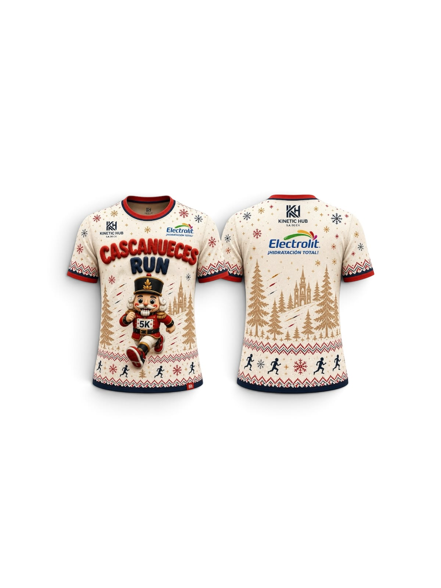
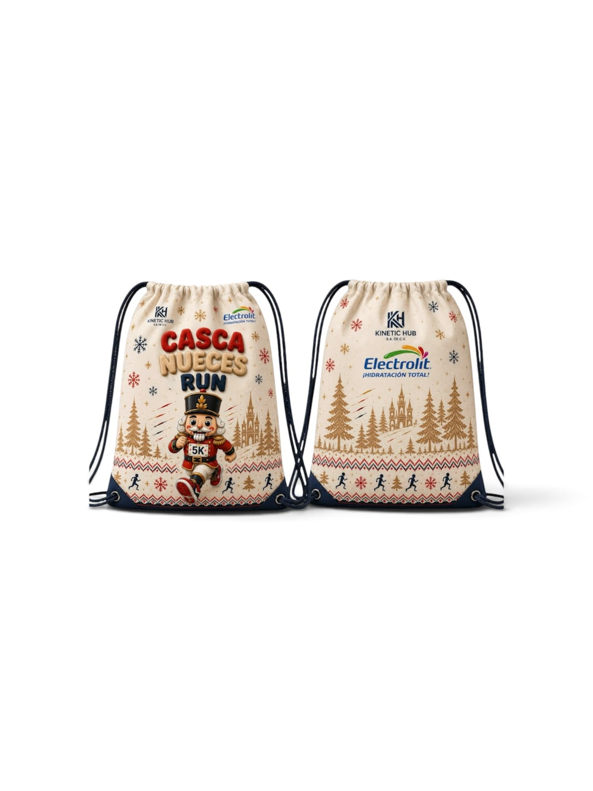
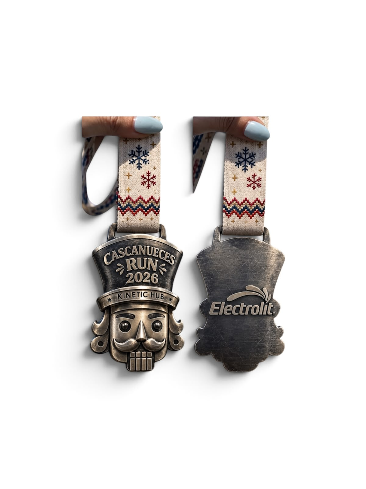

Sobre el evento
Cascanueces Run es una carrera recreativa de 5K y 10K. La salida será en la Puerta del Bosque de San Juan de Aragón y la meta en Puerta 6.
Running recreativo · Próximamente
Domingo 6 de diciembre · Bosque de San Juan de Aragón, CDMX
Cascanueces Run es una carrera recreativa de 5K y 10K. La salida será en la Puerta del Bosque de San Juan de Aragón y la meta en Puerta 6.
11:00 a 17:30 h · Huerto Educativo del Bosque de San Juan de Aragón.
La entrega es personal. Lleva identificación oficial y exoneración firmada. Para menores de edad es obligatoria la carta firmada por padre, madre o tutor.
$400 MXN
1 de agosto, 11:00 h a 31 de agosto, 12:00 h$450 MXN
1 de septiembre, 11:00 h a 31 de octubre, 12:00 h$500 MXN
1 de noviembre, 11:00 h a 15 de noviembre, 12:00 hIncluye número de competidor, playera, morral, hidratación en ruta y meta, servicio médico, resultados y medalla al cruzar la meta.



Consulta la convocatoria completa y descarga la exoneración para llevarla firmada a la entrega de paquetes.